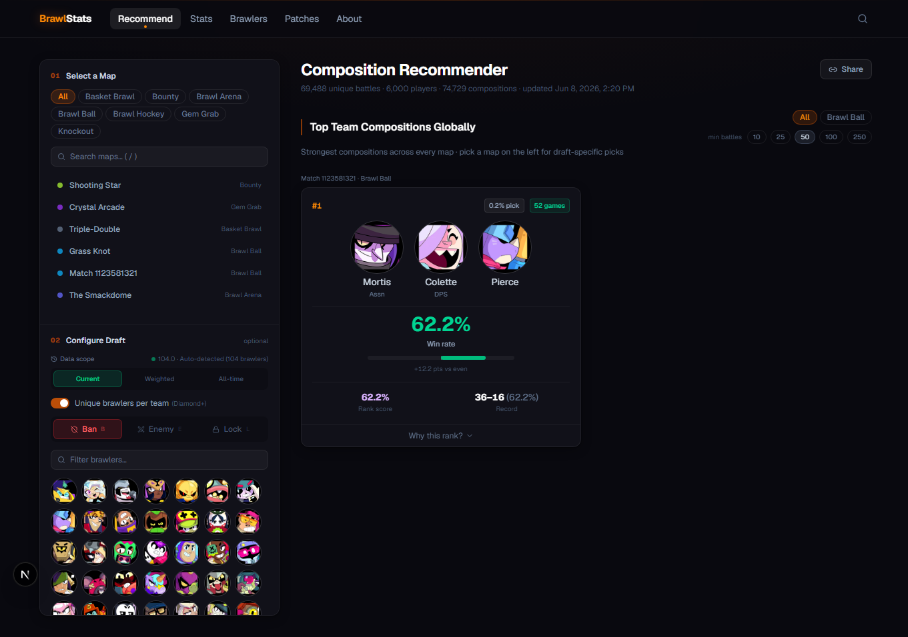

Brawl Stats · Game analytics
Brawl Stats
I built a Brawl Stars analytics app that compares characters and recommends teams for a selected map.
{kind=link}

Overview
A team with a handful of wins can top a raw win-rate table. That doesn’t tell a player much about how it compares with a team that has hundreds of recorded matches.
I worked on the battle-data collection, SQLite queries, recommendation model, and React interface. The main challenge was scoring teams with very different amounts of evidence, including combinations the dataset hadn’t seen.
Separating character strength from synergy
Two strong characters may win together because each is strong individually. I built the model to estimate individual character effects and pair interactions together, so it can account for both.
When there are few matches for a map, estimates draw on broader mode and global data. The final team score blends the model’s prediction with that trio’s recorded results. Teams with more observations rely more on their own record; sparse teams rely more on the model.
The fitting code is plain TypeScript, separate from the database and cache. I can test it with controlled inputs without running the app or collecting new battles.
- Observe: team outcomes, map and mode, sample counts.
- Estimate: individual strength, pair interactions, broader priors.
- Recommend: score candidate teams, blend with their records.
Updating results after collection
Collection scripts write battle records to SQLite. The server aggregates those records into character statistics, map comparisons, and team scores, then caches the results in memory.
A timer alone could leave the app showing old rankings after a collection finished. I made the cache also check the latest completed collection timestamp. That timestamp has a short cache of its own to avoid a database lookup on every request. Restarting the server clears both caches.
Testing the model
I used synthetic teams with known character strengths and pair effects to check whether the model could recover each signal. Other tests cover numeric transformations and small samples.
Separate data-quality checks look at freshness, coverage, and observation counts. The project also includes held-out validation tools, but I don’t yet have a recorded result that supports a claim about future-match accuracy.
Interpreting the scores
The app can suggest a team it hasn’t directly observed by using evidence about its members. That score is a prediction, not a measured win rate for the trio.
Player skill, character selection, and balance patches all affect the records. The next evaluation I want to run is a time-separated comparison across game updates to see how well the recommendations hold up.
Project notes · September 2026